Reveal | Augmented Reality Application Concept
Raising awareness for hostile architecture through the lens of augmented reality
What is Hostile Architecture?
Hostile Architecture (Defensive Design) is an urban-design strategy that uses elements of the built environment to purposefully guide behavior.
It often targets people who use or rely on public space more than others, such as youth, poor people, and homeless people, by restricting the physical behaviors they can engage in.
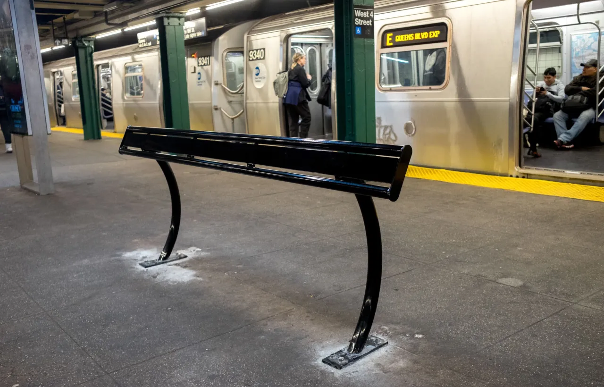
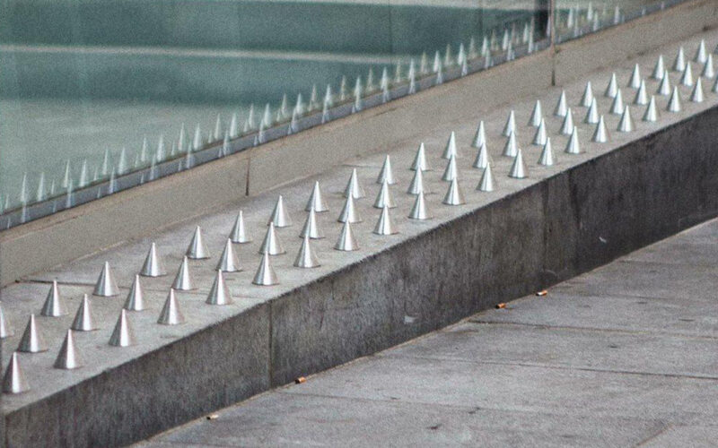
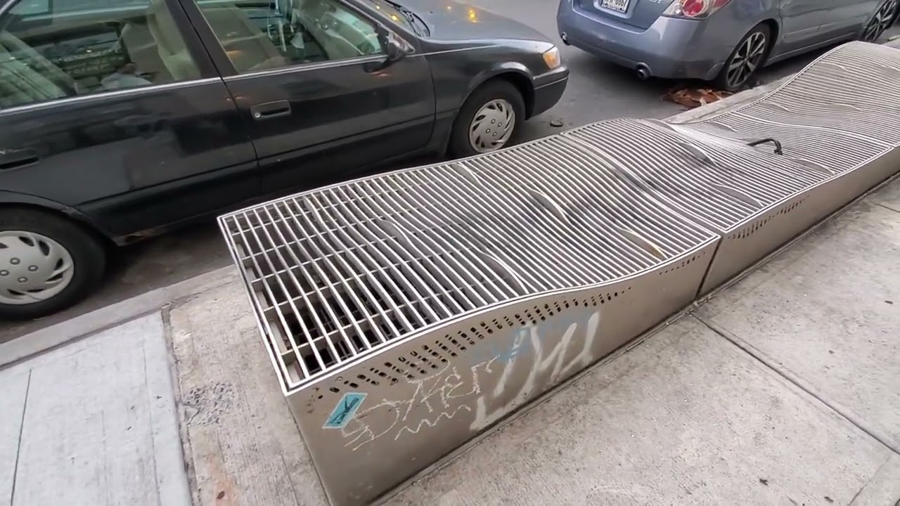
Narrowing down a user base and use case for Reveal
By understanding the diverse needs of urban commuters, unhoused individuals, and accessibility advocates, the analysis ensures the app is designed for real-world impact.
Primary Users
Urban explorers: People interested in understanding the impact of public spaces and architecture.
Advocates for social change: people who want to raise awareness for hostile architecture
Context
Urban Environments: The app will primarily be used outdoors in parks, city streets, and public transportation.
Busy Locations: Since many public spaces are crowded, the app's interface needs to be non-intrusive and simple.
Activities
Exploring public spaces: Users will walk through their urban environments while using the app to scan for and identify hostile architecture elements.
Education and awareness: The app will inform users about the purpose of defensive designs and their societal impact on the most vulnerable populations.
Technology
AR headset: AR headsets are ideal for overlaying real-time information onto physical objects in the user's environment. It includes features such as:
AR headsets battery: most AR headsets have a battery life of 2 hours so users need to be aware that they can't use it forever.
Initial Designs (Based on the Apple Vision Pro Interface)
Finding examples and interfaces was actually quite a challenge, as there weren't many design examples of apps being created on AR/VR headsets, so I ultimately decided on the Apple Vision Pro so it has the most extensive design documentation and design elements online.
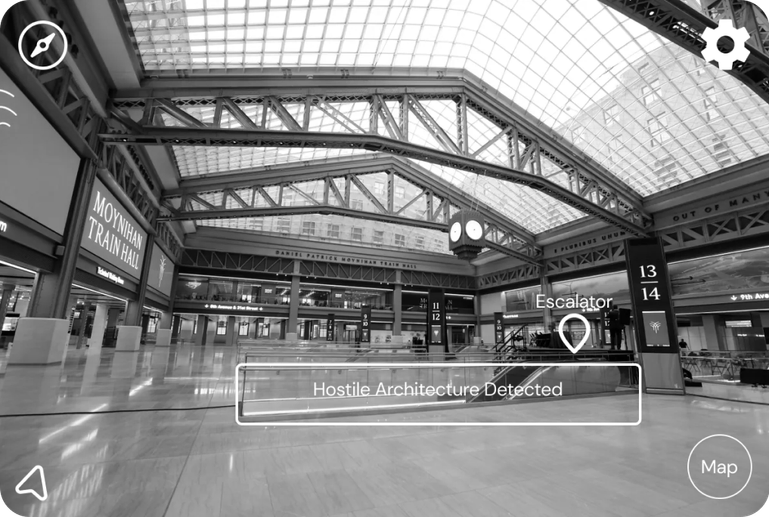
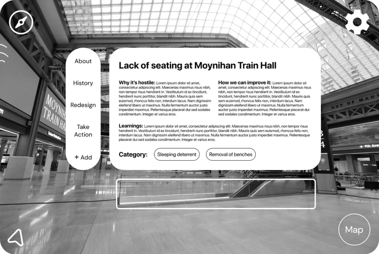
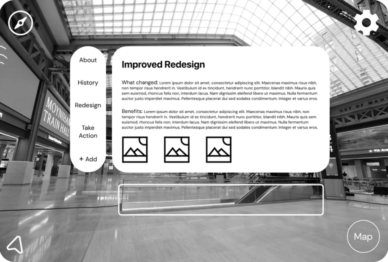
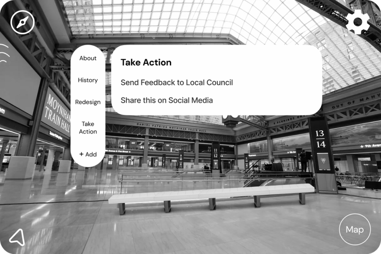
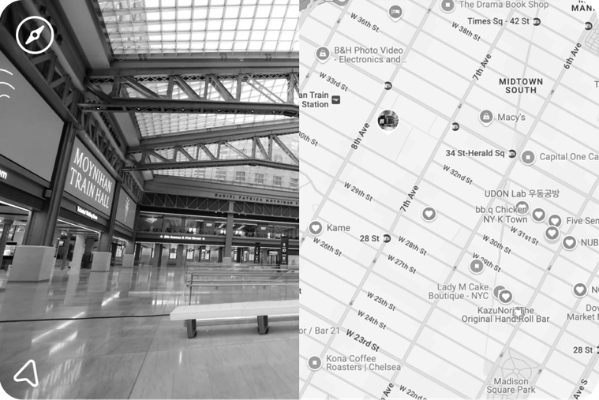
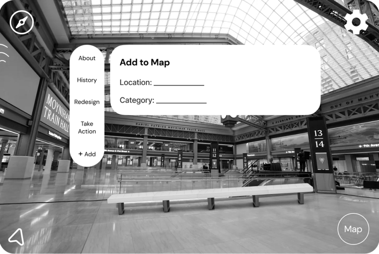
Feedback and Iterations from Real Users
Based on user testing feedback from the my low and mid fidelity wireframes, I iterated on the main screens to be more user friendly, less text heavy, and more visual focused.
Main screen was too crowded and text heavy
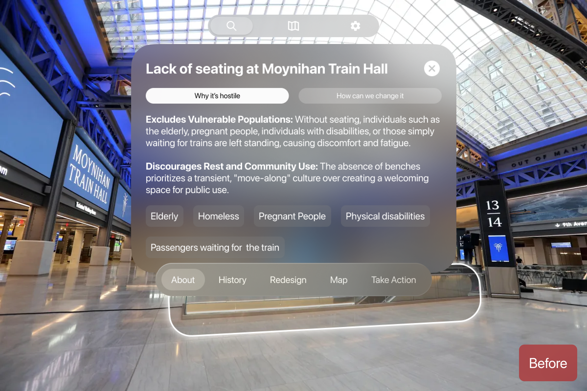
Too Much Text and Overwhelming Layout
Users were overwhelmed with the number of buttons on the screen, and many skipped this part completely to go over to the 3D redesign.
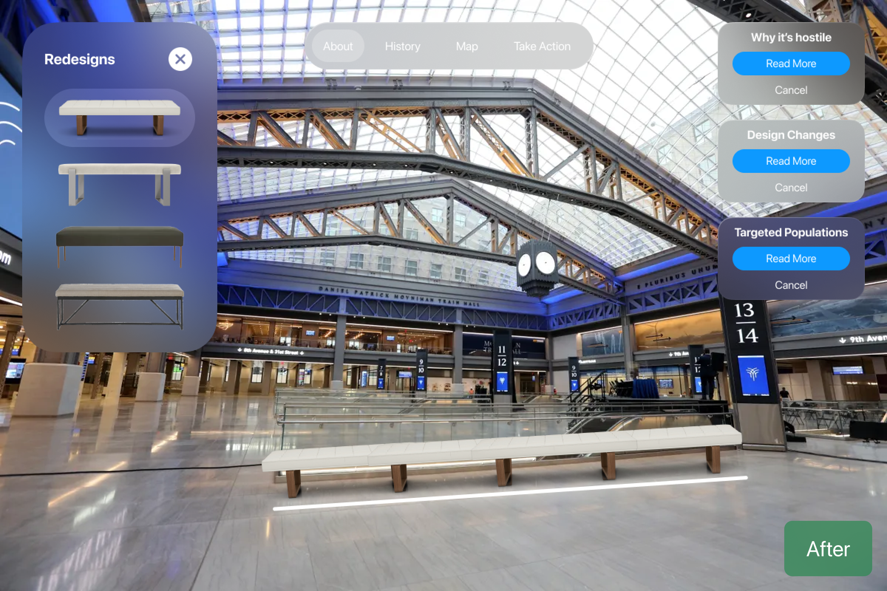
Moved the layouts further towards the edges
I redesigned the overall layout to focus more on the 3D overlay rather than informational text. Users can still read more about it on right hand side if they wish
Submit Form wasn't user friendly and confusing to fill out
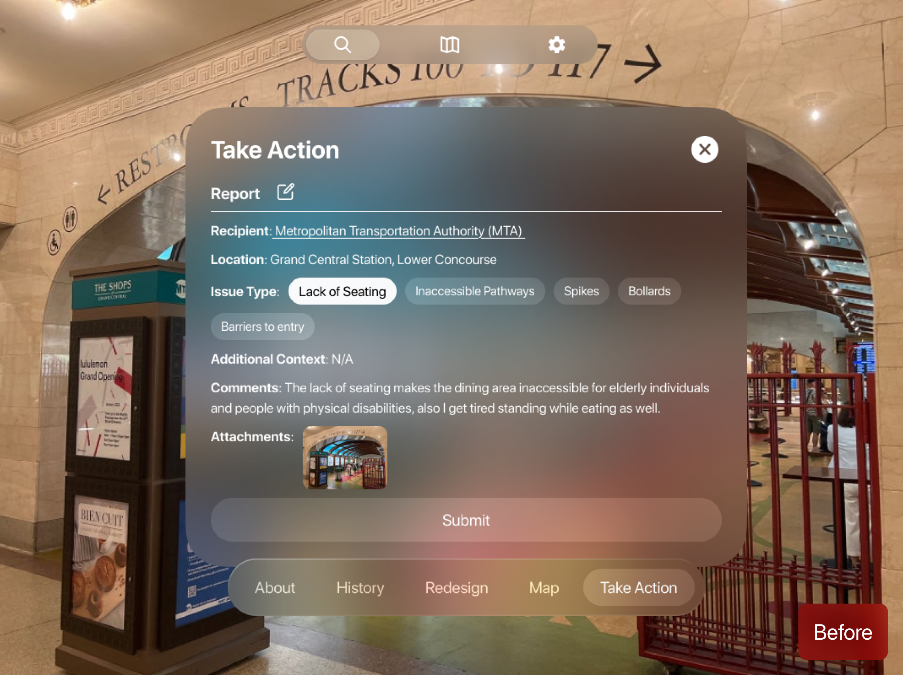
Confusing Form Field
Users were confused with the overall layout of the form field. They were not sure what was pre-filled out and what they had to fill out themselves.
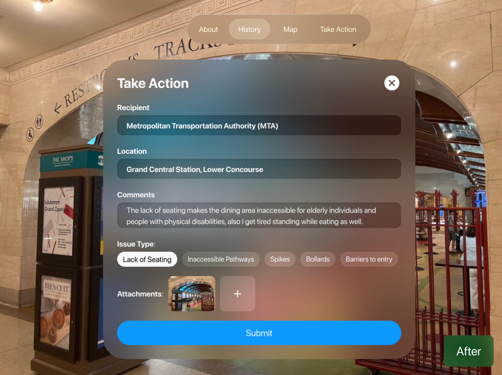
More Intuitive Forms and Submit Button
I redesigned the layout of the form field to have more visual hierarchy and affordance to users. They now know what to click and how to add media before submitting.
The solution, feature by feature
After the user onboards, Reveal automatically identifies any hostile architecture in the area. They can overlay a re-designed version, read up on the architecture, and understand why it's hostile in nature.
Users can view the history of the architecture throughout the years via descriptions and images, getting a better sense of how the current design came to be — then share the location and report it to city officials with a simple form.
Users can head to the map and check out other identified or tagged hostile architecture nearby, which encourages them to explore their environment through the lens of urban design — and maybe even find more examples.
Frequent Interaction with Public Spaces
Most participants are daily commuters or urban dwellers who regularly navigate public spaces like transit hubs, parks, and sidewalks. Their reliance on these spaces underscores the importance of inclusive design.
Varied levels of Awareness
While some users were familiar with the concept of hostile architecture, many were unaware of its impact on vulnerable populations, highlighting the need for educational elements in the app.
Significant Pain Points Identified
Common issues include a lack of seating, inaccessible pathways, and exclusionary features, affecting elderly individuals, people with disabilities, and unhoused populations.
Accessibility Is a Design Priority, Not a Bonus
Creating something meant to highlight exclusion pushed me to be extra intentional about inclusive design in the app itself, from how users navigate it to how information is presented.